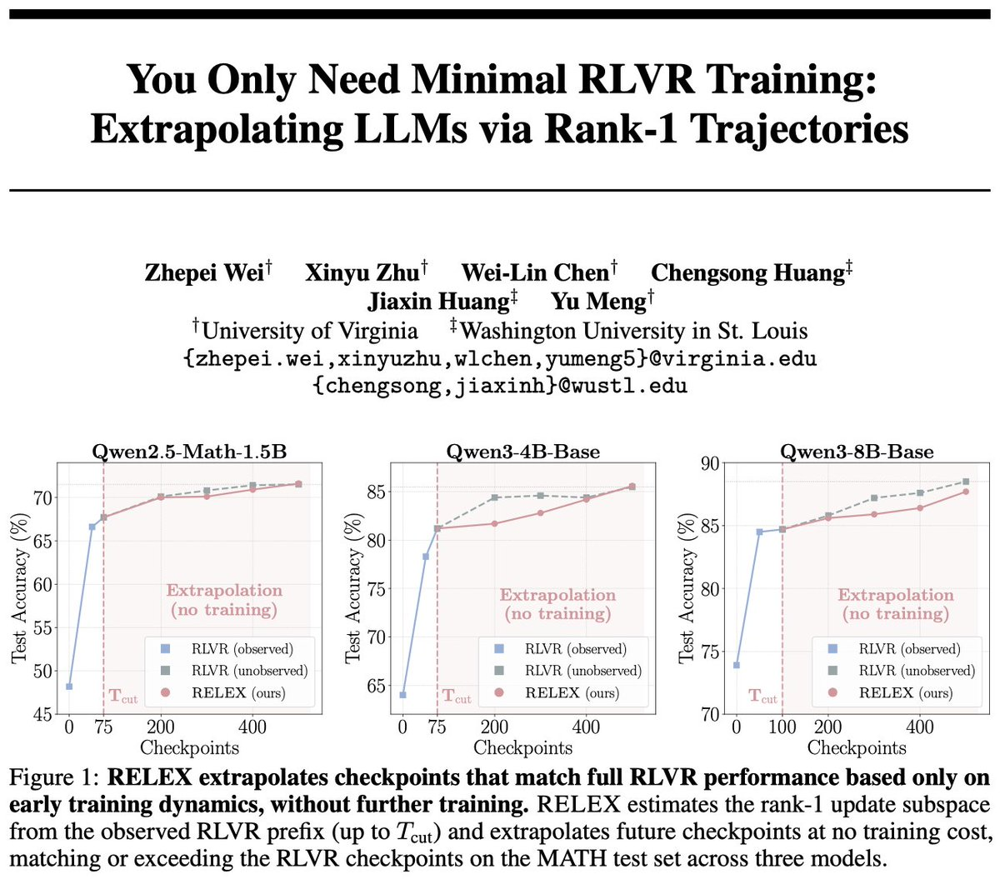
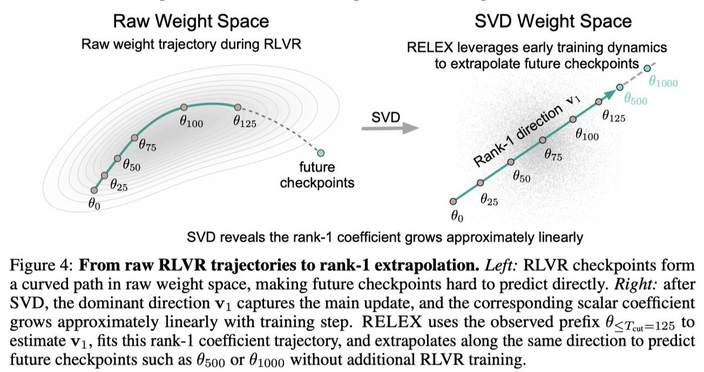
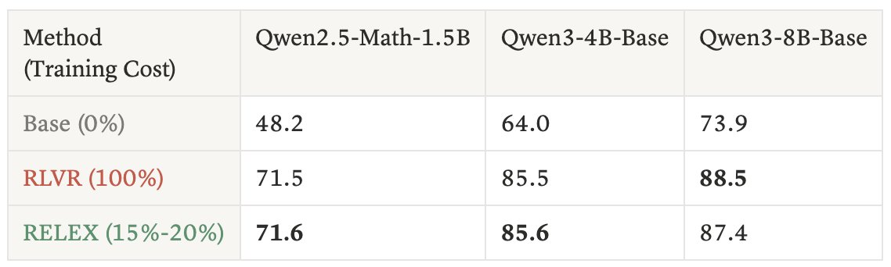
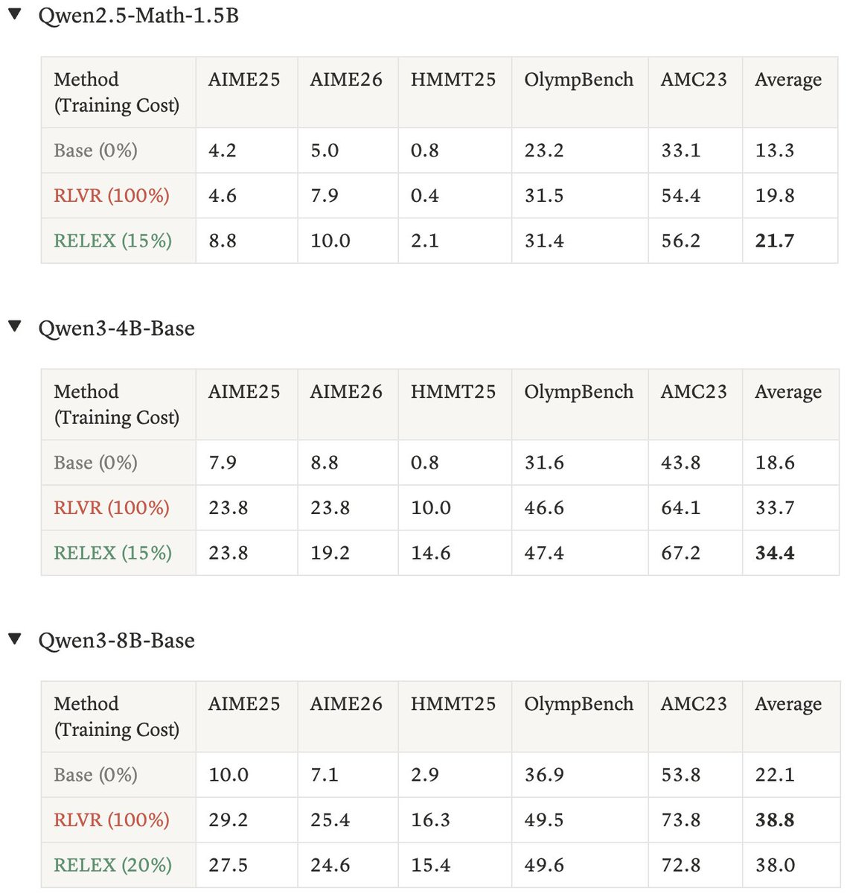
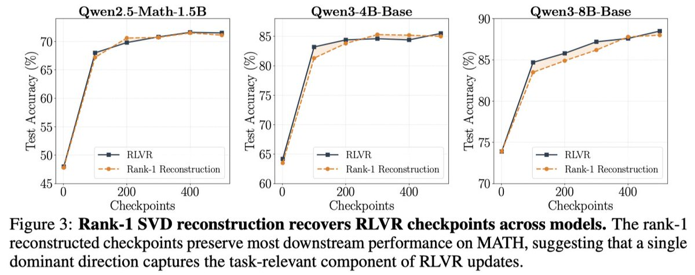
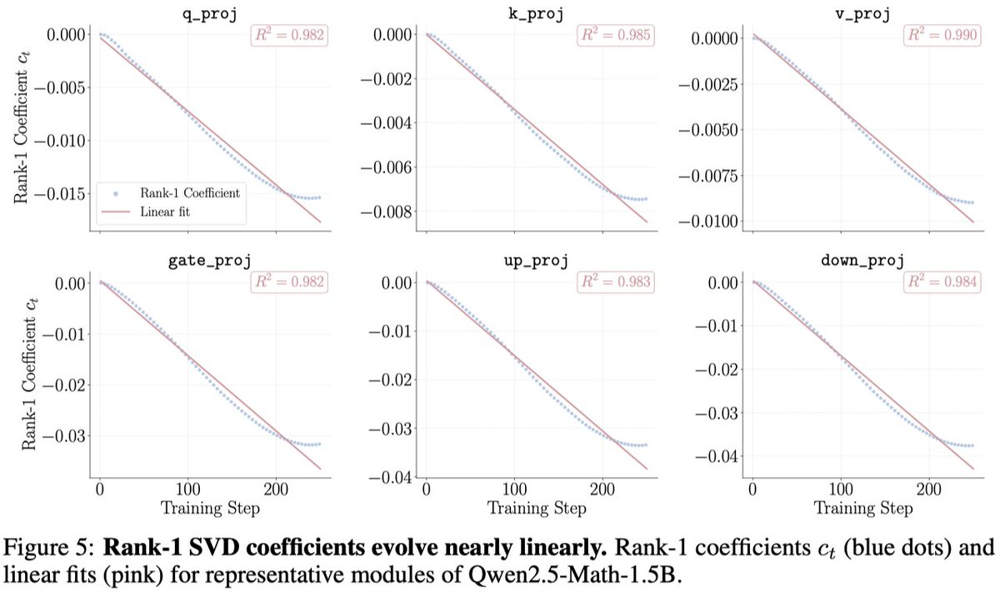
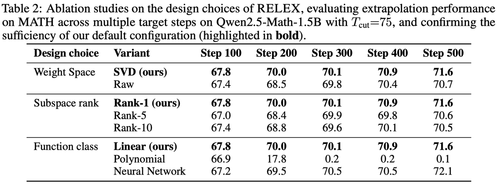
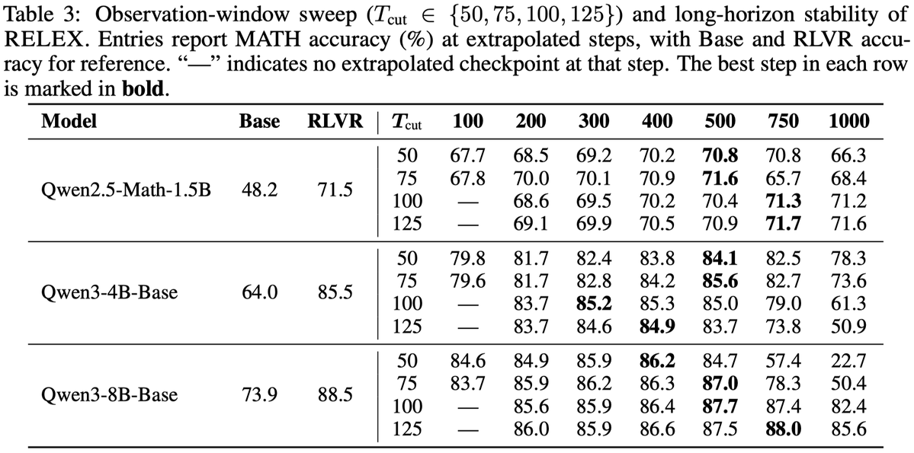

RELEX：用早期 RLVR 轨迹外推未来 checkpoint，是真的省训练，还是一次漂亮的低秩巧合？
这条 X 线程的核心不是“又一个 RL 算法”，而是一个更像 checkpoint 后处理 / weight-space extrapolation 的观察：在作者实验的数学 RLVR 训练中，模型权重增量大部分能被每个 tensor 的 rank-1 方向解释，而该方向上的系数随训练步数近似线性增长；于是只训练前 15%-20%，就可以用线性外推构造后续 checkpoint。
1. 我读了什么，以及哪些地方没有被验证
已稳定获取的一手材料
主材料来自 Zhepei Wei 在 X 上发布的 11 条 thread，以及同作者 Notion 博文 You Only Need Minimal RLVR Training: Extrapolating LLMs via Rank-1 Trajectories。我还用 OpenCLI 读取了作者 profile：Zhepei Wei，UVA CS PhD student，研究兴趣为 ML/NLP/LLM。
OpenCLI twitter threadOpenCLI web read作者 Notion推文图表 OCR
本地证据：X thread JSON 保存于 tmp/relex_thread_2055034616180867536.json；图表资源复制到 /Users/bytedance/Downloads/relex-rlvr-thread-analysis-assets/。
需要保留的边界
推文里的 paper 短链 tinyurl.com/minimal-rlvr 在本机和 OpenCLI 浏览器中都返回连接重置；Grok/mcp-router 搜索没有结果；arXiv MCP 只命中一个无关的 GLiNER-Relex 论文；普通 web 搜索也没有发现同题名 arXiv 条目。

2. 它到底在解决什么问题？
问题很直接：RLVR（Reinforcement Learning with Verifiable Rewards，用可验证奖励做强化学习）在数学、代码等任务上有效，但完整训练昂贵。作者问的是：如果训练早期已经暴露了模型要往哪里走，能不能不用跑完 RLVR，就预测后续 checkpoint？
RLVR 的常规成本
在 RLVR 中，模型会对一道题生成多个答案，系统用可验证规则判断对错，例如数学最终答案是否匹配。GRPO 这类算法用同一题的一组 rollout 做相对优势估计，让正确或高奖励的输出概率上升。
这套流程的成本来自反复采样、打分、反向传播和保存 checkpoint。对 500 步训练来说，后 400 步仍要真实跑优化，即使早期趋势已经很清楚，也不能免费得到。
RELEX 的视角转换
RELEX 不直接改 reward，不改 GRPO，也不训练一个新预测器。它把问题改写成：从早期 checkpoint 的权重增量轨迹中，估计一个主要更新方向，然后沿这个方向外推更远。
这类似在权重空间里做“训练轨迹预测”。它关心的对象不是每道题的梯度、奖励或 token，而是每个 weight tensor 从初始模型到当前 checkpoint 的差值。
3. RELEX 方法一步一步怎么做
先给直觉：把每个 checkpoint 看成从初始模型 theta_0 出发走到 theta_t。每一步的“走了多少”是权重增量 Delta theta_t = theta_t - theta_0。如果这些增量几乎都沿着同一条主方向变化，那么未来 checkpoint 可以用“方向不变，长度继续增长”来构造。

例如完整训练计划是 500 step，但只真实训练前 75、100 或 125 step。作者主结果中，Qwen2.5-Math-1.5B 和 Qwen3-4B-Base 用 15% prefix，Qwen3-8B-Base 用 20% prefix。
对第
ell 个 tensor，计算每个已观察 step 的差值：Delta W_t^(ell) = W_t^(ell) - W_0^(ell)。这一步把“模型训练过程”变成一串权重差值。SVD（singular value decomposition，奇异值分解）会找出最能解释这些 delta 变化的主方向。RELEX 只取第一个方向，也就是 rank-1。
原来一个 tensor 的变化有很多参数维度；投影后只剩一个数
c_t^(ell)，表示第 t 步沿主方向走了多远。作者观察到多数 tensor 的 rank-1 系数接近线性，很多
R^2 >= 0.98。于是用最小二乘拟合 c_t ≈ a t + b。对目标 step
T，预测 c_hat_T = aT + b，再构造 W_hat_T = W_0 + c_hat_T v_1。所有 tensor 都这样做，最后拼回一个完整 checkpoint。一个小例子
假设某个小 tensor 的 RLVR delta 在前 3 个 checkpoint 上投影到主方向后的系数是 0.12、0.25、0.37，基本每 25 step 增加约 0.125。RELEX 做的不是继续训练到 500 step，而是拟合一条直线，然后直接推到 500 step 的系数，比如得到 2.50，再把 tensor 设置成 W_0 + 2.50 * v_1。真实系统里这对每个 tensor 分别做。
4. 评估到底评了什么？
作者的实验对象是数学推理 RLVR，而不是通用聊天质量、代码、工具调用或多领域 agent。训练任务是 MATH，优化算法是 GRPO，模型包括 Qwen2.5-Math-1.5B、Qwen3-4B-Base、Qwen3-8B-Base，完整 RLVR 训练为 500 step。
输入
数学题 prompt。模型需要生成推理和最终答案。
训练信号
可验证奖励：最终答案等是否正确。GRPO 用组内相对奖励更新模型。
评分对象
最终 checkpoint 在数学 benchmark 上的 accuracy，不是训练 loss，也不是人类偏好。
In-domain：MATH test set
这个表衡量训练域内表现：训练和评估都围绕 MATH 数学题。RELEX 使用很少真实训练成本，但构造出的 checkpoint 在 MATH test 上接近完整 RLVR。
| 方法 / 训练成本 | Qwen2.5-Math-1.5B | Qwen3-4B-Base | Qwen3-8B-Base |
|---|---|---|---|
| Base (0%) | 48.2 | 64.0 | 73.9 |
| RLVR (100%) | 71.5 | 85.5 | 88.5 |
| RELEX (15%-20%) | 71.6 | 85.6 | 87.4 |

OOD：未见过的数学推理 benchmark
作者还报告了 AIME25、AIME26、HMMT25、OlympBench、AMC23 的 OOD 结果。平均值上，RELEX 对 1.5B 和 4B 模型略高于完整 RLVR，对 8B 模型略低。
| 模型 | 方法 | AIME25 | AIME26 | HMMT25 | OlympBench | AMC23 | Average |
|---|---|---|---|---|---|---|---|
| Qwen2.5-Math-1.5B | Base | 4.2 | 5.0 | 0.8 | 23.2 | 33.1 | 13.3 |
| Qwen2.5-Math-1.5B | RLVR | 4.6 | 7.9 | 0.4 | 31.5 | 54.4 | 19.8 |
| Qwen2.5-Math-1.5B | RELEX 15% | 8.8 | 10.0 | 2.1 | 31.4 | 56.2 | 21.7 |
| Qwen3-4B-Base | Base | 9.0 | 8.8 | 0.8 | 31.6 | 43.8 | 18.6 |
| Qwen3-4B-Base | RLVR | 23.8 | 23.8 | 10.0 | 46.6 | 64.1 | 33.7 |
| Qwen3-4B-Base | RELEX 15% | 23.8 | 19.2 | 14.6 | 47.4 | 67.2 | 34.4 |
| Qwen3-8B-Base | Base | 10.0 | 7.1 | 2.9 | 36.9 | 53.8 | 22.1 |
| Qwen3-8B-Base | RLVR | 29.2 | 25.4 | 16.3 | 49.5 | 73.8 | 38.8 |
| Qwen3-8B-Base | RELEX 20% | 27.5 | 24.6 | 15.4 | 49.6 | 72.8 | 38.0 |

5. 为什么这么简单的方法可能有效？
作者给出两个核心发现：第一，RLVR 的 weight delta 很低秩；第二，投影到 rank-1 方向后的系数随训练步数近似线性。我的理解是：RELEX 成功的原因不是“线性模型很强”，而是 SVD 找到的方向把原始高维、带噪的训练轨迹压缩成了一个更平滑的主要信号。


消融结果说明了什么
| 设计选择 | 变体 | Step100 | Step200 | Step300 | Step400 | Step500 | 解释 |
|---|---|---|---|---|---|---|---|
| Weight space | SVD | 67.8 | 70.0 | 70.1 | 70.9 | 71.6 | SVD 比 raw 稳，支持“谱降噪”说法。 |
| Weight space | Raw | 67.4 | 68.5 | 69.8 | 70.4 | 70.7 | 直接在原始权重空间外推较差。 |
| Rank | Rank-1 | 67.8 | 70.0 | 70.1 | 70.9 | 71.6 | 默认 rank-1 足够。 |
| Rank | Rank-5 / Rank-10 | 67.0 / 67.4 | 68.4 / 68.8 | 69.9 / 69.6 | 69.8 / 70.1 | 70.6 / 70.5 | 更高 rank 引入更多噪声，不一定更好。 |
| Function | Linear | 67.8 | 70.0 | 70.1 | 70.9 | 71.6 | 简单线性最稳定。 |
| Function | Polynomial | 66.9 | 17.8 | 0.2 | 0.2 | 0.1 | 长外推灾难性崩溃，典型过拟合/外推不稳定。 |
| Function | Neural network | 67.2 | 69.5 | 70.5 | 70.5 | 72.1 | 最后一步可能更高，但整体不如线性可控。 |

6. 长外推结果：最强也最需要谨慎的部分
作者报告 RELEX 可以给定观察窗口后外推到 20 倍窗口，例如观察前 50 step 后外推到 1000 step。这个 claim 很抓人，但表格也显示长外推的稳定性明显依赖模型和窗口。

积极信号
Qwen2.5-Math-1.5B 在 Tcut=125 时，外推到 750/1000 step 仍约 71.7/71.6；Qwen3-8B-Base 在 Tcut=100 时，1000 step 仍有 82.4，说明不是所有长外推都会马上崩。
风险信号
Qwen3-4B-Base 在 Tcut=125 外推到 1000 step 只有 50.9；Qwen3-8B-Base 在 Tcut=50 外推到 1000 step 只有 22.7。这说明“越外推越好”不是普遍规律，窗口选择非常关键。
7. 不能过度解读的地方
限制一：任务范围还是数学 RLVR
作者自己也提出后续问题：SFT 是否也有同样低秩线性结构？代码 RLVR 是否成立？非 verifiable reward 任务是否成立？当前证据主要支持“数学题 + 可验证奖励 + Qwen 系列 + GRPO”这个范围。
限制二：它节省的是后续训练，不是完全免费
RELEX 仍然需要真实跑早期 RLVR prefix，并保存多个 checkpoint。还要对每个 tensor 做 SVD 和重建。相对完整 RLVR，这个成本可能很小；但它不是零成本启动，也不是不用 RLVR 数据。
限制三：accuracy 接近不等于行为完全等价
RELEX checkpoint 可能在 benchmark accuracy 上接近 RLVR，但这不保证输出风格、错误类型、校准、长度、拒答行为或安全属性完全一致。尤其当外推超出观察窗口很多时，weight-space 行为边界需要更细评估。
限制四：缺少完整 paper/code 时，复现可信度有限
目前可读材料是 X 线程和作者 Notion blog。我没有验证到 arXiv 正式版本，也没有看到公开代码仓库。因此对于 SVD 的具体实现细节，例如 tensor flatten 方式、checkpoint 采样密度、是否排除 embedding/lm head、不同 tensor 的符号对齐和数值精度处理，还需要完整实现确认。
8. 我的核心 insight
这条 thread 真正有价值的地方，是把 RLVR 从“每一步都必须真实优化”的叙事，拉到“训练轨迹本身可能有可预测几何结构”的叙事。它没有证明 RLVR 可以被普遍替代，但它给了一个很强的研究问题：训练后期到底是在学习新东西，还是在沿早期已经找到的方向继续放大？
如果你做训练工程
RELEX 可以作为 checkpoint extrapolation 的候选工具：先跑短 prefix，快速预测多个未来 step 的模型，做 early evaluation。如果预测可靠，可以少跑一些后续训练；如果不可靠，至少也能作为训练诊断，判断早期轨迹是否稳定。
如果你做研究
我会优先验证三件事：第一，在 coding RLVR 上是否还 rank-1；第二，不同 random seed 的主方向是否一致；第三，RELEX checkpoint 与真实 RLVR checkpoint 的行为差异，而不只看平均 accuracy。
9. 复现本次读取的关键命令
opencli twitter thread "https://x.com/weizhepei/status/2055034616180867536" --limit 80 -f json --trace retain-on-failure
opencli web read --url "https://weizhepei.notion.site/you-only-need-minimal-rlvr-training" --stdout true --download-images true --wait 8 -f json --trace retain-on-failure
opencli twitter profile "weizhepei" -f json --trace retain-on-failure
curl -Ls -o /dev/null -w '%{url_effective}
%{http_code}
' "https://t.co/UWUJ1CB8tR"
tesseract "tmp/relex-assets/05-indomain.jpg" stdout -l eng --psm 6